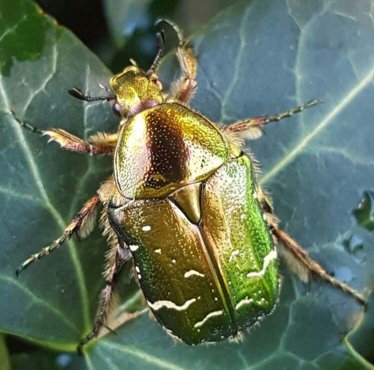

¿Qué escarabajo verde es este?
Mari · hace 2 h

Lo encontré en un camino de Bizkaia. Mide unos 2 cm y tiene el
caparazón verde metálico. ¿Alguien me ayuda a identificarlo?
Respuestas
Andrés:
Parece una cetonia dorada. Consulta la
enciclopedia.
Cómo fotografiar arañas
Selene · ayer
Mi método para que las arañas lobo no se escapen del encuadre:
- Acércate despacio y sin sombra sobre el animal.
- Usa luz natural, nunca flash directo.
- Enfoca a los ojos y dispara en ráfaga.
Material de campo
Unai · hace 2 días
Mi lista para las salidas de fin de semana:
- Observación
- Lupa de 10 aumentos
- Prismáticos
- Captura sin daño
- Botes de cristal con tapa agujereada
- Pincel suave
- Red entomológica
¿Quieres ser parte de nuestra comunidad?
Crea tu cuenta.